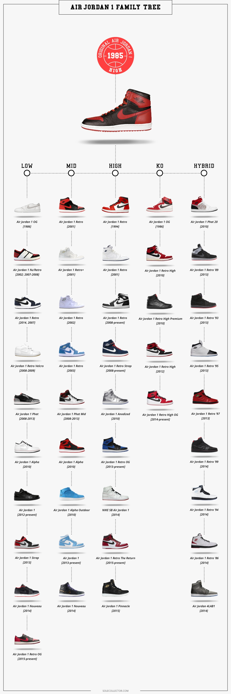

Có lẽ đã có không ít những bài viết về phiên bản Jordan huyền thoại này, đã 30 năm kể từ lần đầu tiên Michael Jordan cùng Air Jordan 1 xuất hiện và mở ra một kỉ nguyên mới. Không ít những phiên bản mượn danh Jordan 1 nhưng lại được thêm thắt các chi tiết khác, biến đổi thành một dòng khác. Để có thể mang đến cho người đọc một cái nhìn rõ ràng nhất cũng như đầy đủ nhất về tất cả các dòng giày có “dây mơ rễ má” với cái tên Jordan 1, #HNBMG xin được dịch lại bài viết này của Sole Collector.
Đầu tiên sẽ là “cây gia đình” của dòng Jordan 1, với 5 nhánh gồm Low, Mid, High, KO và Hybrid, với mỗi nhánh sẽ có những sản phẩm và những phiên bản tiêu biểu cho từng dòng sản phẩm đó.
Phiên bản đầu tiên đã vô cùng quen thuộc với chúng ta, phiên bản Air Jordan 1 High OG, ra mắt năm 1985 với mức giá lúc bấy giờ là $65.

Phiên bản Air Jordan 1 Low OG ra đời chỉ sau phiên bản cổ cao 1 năm (1986) và mức giá bán lẻ là $60 ở thời điểm đó.

Cùng thời điểm phát hành phiên bản Low thì Air Jordan KO cũng được lên kệ, và những ai muốn biết thêm về Air Jordan 1 KO cũng như lí do ra đời của cái tên KO thì có thể tìm đọc tại Đây.

Đánh dấu lần đầu tiên Nike và Jordan biết đến định nghĩa Retro, 3 phiên bản Air Jordan 1, 2, 3 được tái phát hành. Một lần nữa, phiên bản Air Jordan 1 High lại xuất hiện. Điểm khác biệt khi so sánh với phiên bản OG chính là form giày.

Năm 2001, một phiên bản Jordan 1 High được phát hành độc quyền tại Nhật và điểm khác biệt duy nhất so với các dòng Jordan 1 High khác chính là việc thay logo Nike Air trên lưỡi gà bằng logo Jumpman. Phiên bản này được bán với mức giá $80-$100 tùy vào một số cửa hàng ở Nhật.